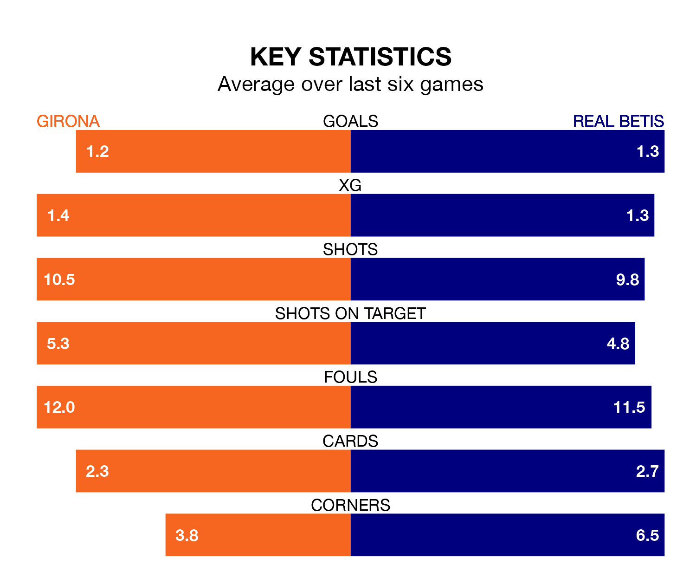

Girona host Real Betis in Sunday's match at Estadi Municipal de Montilivi looking to bounce back from defeat last time out in La Liga.
Girona, who sit third in the league after 29 games, fell to a 1-0 away defeat to Getafe CF on March 16.
They face a Betis side who also lost their last match, a 2-0 defeat to Rayo Vallecano, and who sit seventh in the table.
With 59 goals in 29 games so far this season, Girona are the league's third-highest scorers with 2.0 goals per game. And they are conceding fewer than average, letting in 34 goals at a rate of 1.2 per game.
Betis, meanwhile, are below average scorers, with 1.2 goals per game, compared to a league average of 1.3. They have conceded 1.1 goals per game.
In the last 10 years, Girona and Betis have played each other on nine occasions. Betis won seven of them and they drew twice.
On average, Girona scored 1.0 goal and Betis 1.9 in those matches.
Their last meeting was on December 21, when they played out a 1-1 draw.
In Paulo Gazzaniga, the home side can rely on one of the league's safest pair of hands. He has kept 10 clean sheets in his 29 appearances this season, and only two other 'keepers – Athletic Club Bilbao's Unai Simón and Real Sociedad's Álex Remiro – have been able to prevent the opposition scoring on more occasions in La Liga.
In the visitors' net, Rui Silva has eight clean sheets in 20 games.
Girona are in disappointing form in La Liga, with two wins and four losses from their last six games.
With two wins and a draw over that period, Betis's form is slightly better – they have taken seven points from 18, compared to Girona's six.
Updated: 12:16 (UTC), 25/03/24